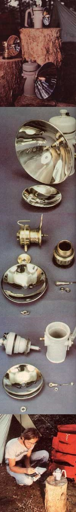

Here they are in action! CArbidelamps offer efficient, carry-along lighting for all kinds of outdoor activities. When water is mixed with carbide crystals inside the burner, acetylene gas is emitted... ignited... and then reflected by the concave metal disk attached to the front of the lantern. The intensity of light can be adjusted by turning the control valve on top of the lamp. Justrite manufacturers a sturdy plastic lamp (shown here ""wearing"" its detachable hang-up handle) which can be fitted with different sizes of reflectors. Safesport's traditional brass model features the standard 4"" reflector and a clip-on wire hanger that allows it to be fastened to a belt or cap. The smaller lamp made by Justrite has a buit-in plastic handle. Backpackers find the small lantern produces plenty of light for campsite chores (But, for safety, the open-flamed device should be operated only outside your tent... and should never be left to burn unattended.